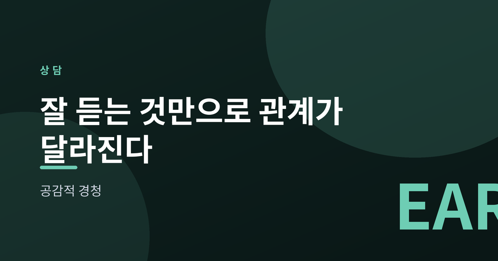
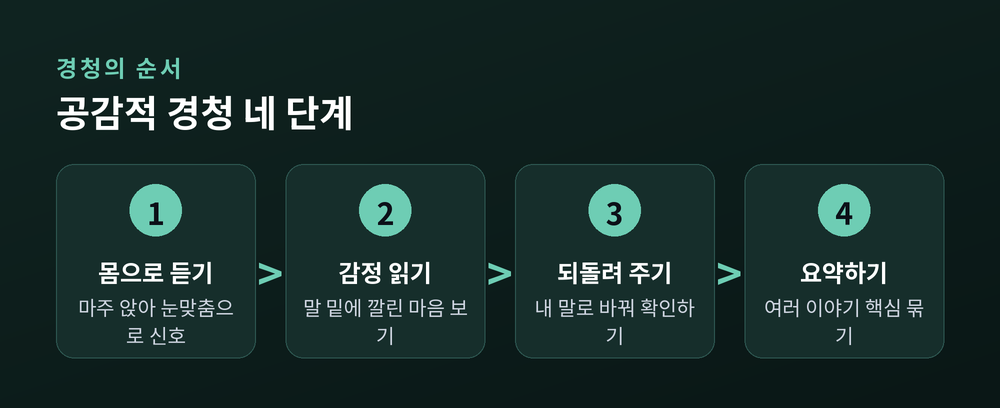
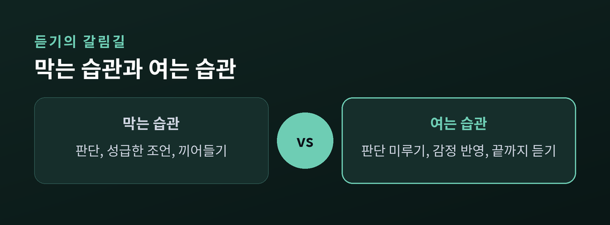
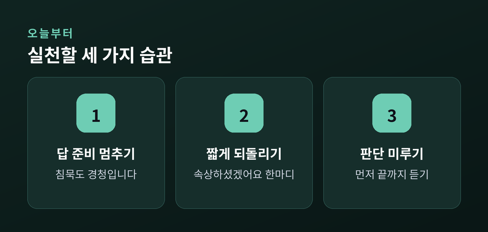

잘 듣는 것만으로 관계가 달라진다

이번 글에서는 공감적 경청을 정리해 보겠습니다. 상담 이론에서 말하는 잘 듣는 태도가 무엇인지, 그리고 그것이 왜 관계를 바꾸는지를 차분히 짚어보려 합니다. 특별한 화술이 아니라, 듣는 방식에 관한 이야기입니다.
우리는 대개 이해하려고 듣지 않고 대답하려고 듣습니다. 상대가 말하는 동안 머릿속으로는 이미 답을 준비합니다.
공감적 경청은 그 순서를 뒤집습니다. 먼저 이해하고, 그다음에 말합니다.
상담학자 칼 로저스는 이를 인간중심 상담의 뼈대로 삼았습니다. 핵심은 세 가지입니다. 상대의 감정을 정확히 이해하려는 공감, 있는 그대로 존중하는 태도, 그리고 꾸밈없이 진솔한 자세입니다.
여기서 공감은 상대의 감정에 휩쓸리는 것이 아닙니다. 마치 내 일인 듯 느끼되, 그 안에 빠지지는 않는 것입니다.
경청은 재능이 아니라 익힐 수 있는 기술입니다. 상담에서 쓰는 순서를 따라가 보면 이렇습니다.
먼저 몸으로 듣습니다. 상대를 향해 앉고, 편안한 눈맞춤으로 "듣고 있다"는 신호를 보냅니다.
다음은 감정을 읽습니다. 말의 내용뿐 아니라 그 밑에 깔린 마음을 함께 봅니다.
그리고 되돌려 줍니다. 들은 것을 내 말로 바꿔 "이런 마음이셨군요"라고 확인합니다.
마지막으로 요약합니다. 여러 이야기를 하나로 묶어 핵심을 짚어 줍니다.

돕고 싶은 마음이 클수록 우리는 성급해집니다.
상대가 말을 마치기도 전에 판단을 내리거나, 해결책을 서둘러 내밉니다. "그건 이렇게 해야지"라는 말이 대표적입니다.
토머스 고든은 이런 반응을 소통의 걸림돌이라 불렀습니다. 판단, 성급한 조언, 끼어들기, 섣부른 안심시키기가 여기에 듭니다.
문제는 의도가 나빠서가 아닙니다. 좋은 의도라도, 듣는 사람의 생각으로 대화를 채우면 상대는 이해받았다고 느끼지 못합니다.
그래서 잠시 내 판단과 조언을 내려놓는 연습이 필요합니다. 해결의 몫은 상대에게 남겨 두는 편이 낫습니다.

거창한 준비는 필요 없습니다. 작은 습관 몇 가지면 충분합니다.
첫째, 상대가 말하는 동안 답을 준비하지 않습니다. 침묵을 견디는 것도 경청입니다.
둘째, 들은 내용을 짧게 되돌려 줍니다. "속상하셨겠어요" 한마디가 열 마디 조언보다 큽니다.
셋째, 판단을 미룹니다. 옳고 그름을 가리기 전에 먼저 상황을 끝까지 듣습니다.
예전에는 잘 듣는 것이 소극적인 일이라 여겼습니다. 지금은 생각이 다릅니다. 잘 듣는 것이야말로 관계에서 가장 적극적인 행동입니다.

끝으로 한 마디만 더 드리겠습니다.
— "공감적 경청은 상대가 이해받았다고 느낄 때까지 듣는 것입니다."
기법보다 먼저 필요한 것은 그저 곁에 있어 주려는 마음일지도 모릅니다. 다만 심각하거나 오래 지속되는 어려움이라면, 전문 상담사나 상담 기관의 도움을 받으시길 권합니다.